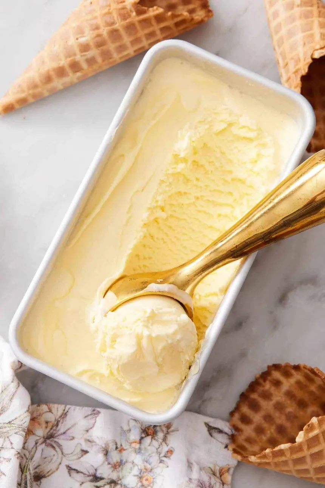

Ultimate Vanilla Ice Cream (Custard-Style)

Ingredents
Ingredents
Custard Base
- 2 cups heavy cream
- 1 cup whole milk
- 3/4 cup granulated sugar
- 1 vanilla bean or 1.5 tbsp high-quality vanilla extract
- 4 large egg yolks
- Pinch of salt
Instructions:
1. Heat the dairy
- In a saucepan, combine heavy cream, milk, half the sugar, and salt.
- If using a vanilla bean, split it, scrape the seeds into the pot, and add the pod too.
- Heat over medium until just steaming — do not boil.
- In a separate bowl, whisk the egg yolks with the remaining sugar until pale and slightly thick.
- Slowly pour a little warm cream mixture into the yolks while whisking constantly.
- Gradually add more until the yolks are warm, then pour everything back into the saucepan.
- Cook over medium-low heat, stirring constantly with a spatula.
- Stop when it thickens enough to coat the back of the spoon (around 170–175°F / 77–80°C).
- Remove from heat immediately.
- If using extract, add it now (after heating).
- Remove the vanilla bean pod if used.
- Strain the custard through a fine sieve.
- Refrigerate for at least 4 hours, ideally overnight. Cold custard = smoother ice cream.
- Pour into your ice cream maker and churn according to the manufacturer instructions.
- Transfer to a container and freeze for 4 hours or until firm.